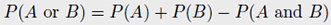
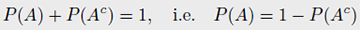
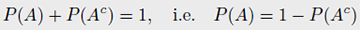
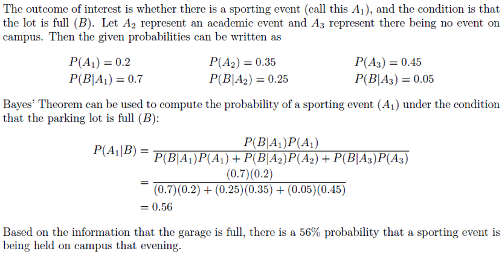
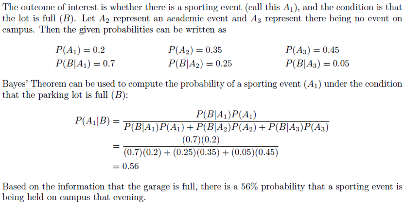
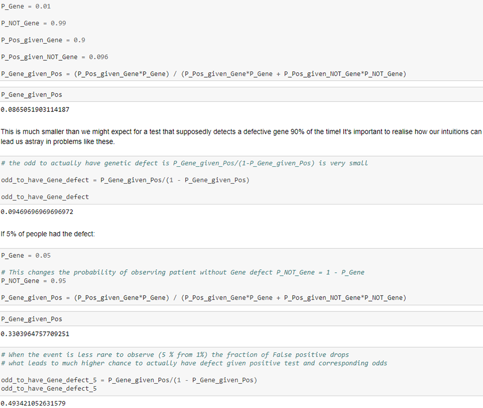
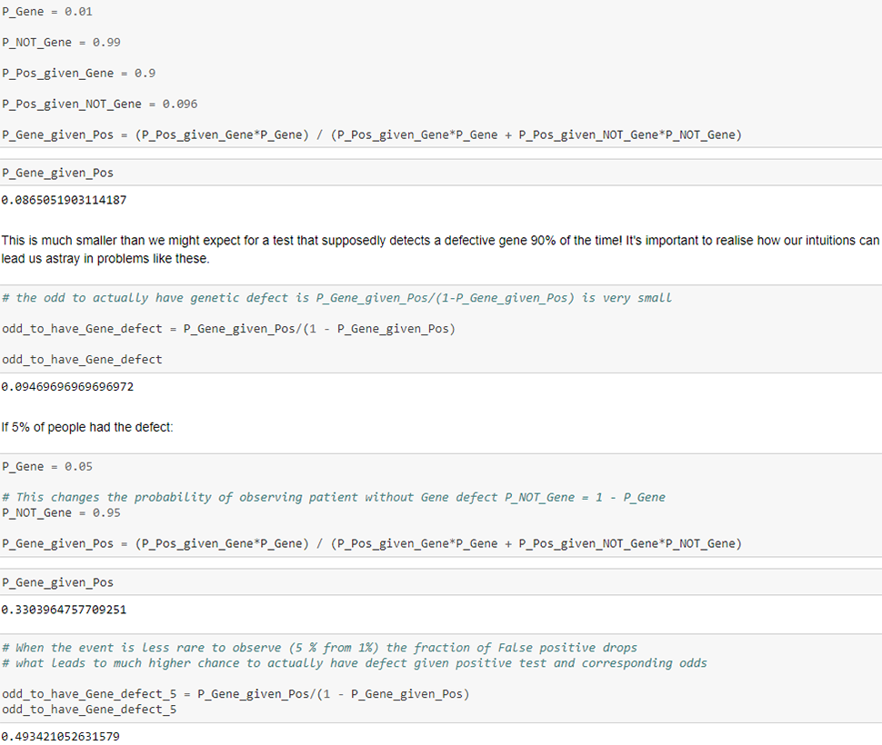
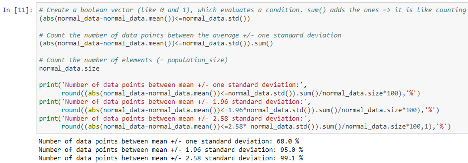
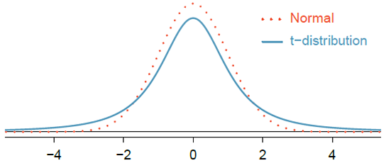
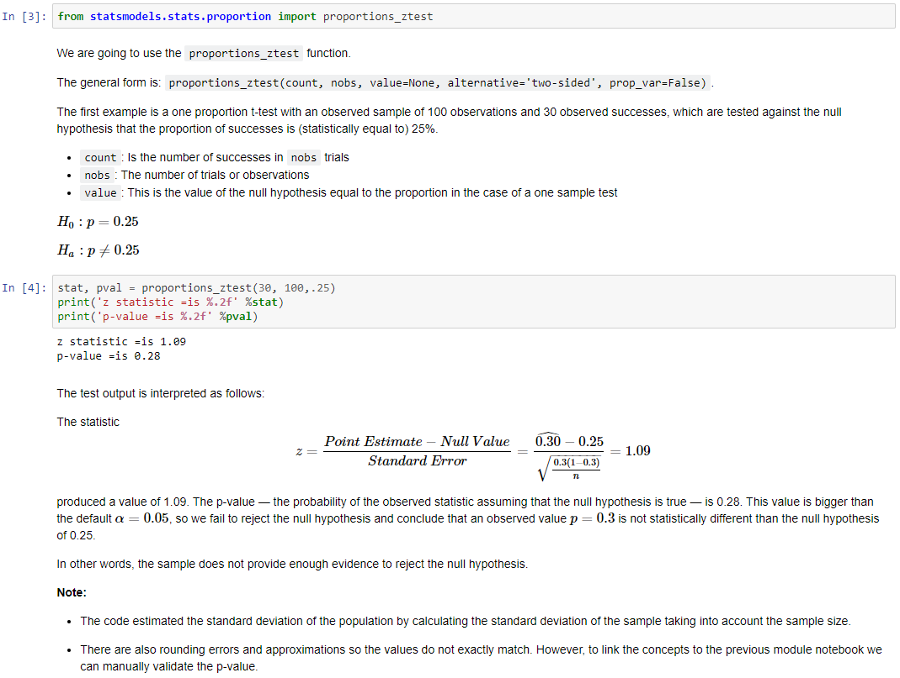

Statistics for Data Science
University of Waterloo Professional Development
Statistics is the study of how best to collect, analyze, and draw conclusions from data (identify the problem → collect relevant data → analyze the data → form a conclusion).
A summary statistic is a single number summarizing a large amount of data. For instance, the primary results of the study after 1 year could be described by two summary statistics: the proportion of people who had a stroke in the treatment (45/224 = 0.20 = 20%) and control (28/227 = 0.12 = 12%) groups.
When recording data, use a data matrix unless you have a very good reason to use a diferent structure. This structure allows new cases/observational units to be added as rows or new variables as new columns:

Types of data:
- Quantitative (or numerical) data deals with numbers and things you can measure objectively (dimensions such as height, width, and length; temperature and humidity; prices; area and volume).
- Discrete data is a count of something that cannot be made more precise. Typically, it involves integers (the number of children/adults/pets in your family; measured quantities; results of experiments; numerical values obtained by counting).
- Continuous data can be divided and reduced to finer and finer levels (you can measure someone's height at progressively more precise scales - meters, centimeters, millimeters, and beyond; values obtained by measuring - e.g. height of all students; all values in a given interval of numbers - e.g. federal spending).
- Qualitative (or categorical) data deals with characteristics and descriptors that cannot be easily measured, but can be observed subjectively (personal tastes; textures; attractiveness; colour).
- Ordinal data: When items are assigned to categories that have some kind of implicit or natural order, such as "short, medium, or tall", the data is of ordinal nature. Another example is a survey question that asks us to rate an item on a 1 to 10 scale, with 10 being the best. This implies that 10 is better than 9, which is better than 8, and so on.
- Nominal data: Any categorical data that doesn't have an order (e.g. "blue", "red", "green").
- Binary data place things in one of two mutually exclusive categories: right/wrong, true/false, or accept/reject. It is nominal data but with only two distinct categories.
- Other non-numerical data such as text or video data.
Broadly speaking, when you measure something and give it a number value, you create quantitative data. When you classify or judge something, you create qualitative data.
Relationships between data:
- Independent variables: If two variables are not associated, then they are said to be independent. That is, two variables are independent if there is no evident relationship between the two.
- Associated, or dependent: When two variables show some connection with one another, they are called associated variables. Associated variables can also be called dependent variables and vice-versa.
- Positive association: Two variables are said to be positively associated when they have a linear relationship with a positive slope. That means when the value of one variables increases, the value of the other variable increases as well. For example, the amount people spend is positively associated with the money people make, if we assume that people who earn more spend more.
- Negative association: When the value of a variable goes down when the value of another variable goes up. This is often characterized by a downward trend when the variables are plotted.
A scatterplot provides a case-by-case view of data for two numerical variables:

When we suspect one variable might causally affect another, we label the first variable the explanatory variable and the second the response variable. Is federal spending, on average, higher or lower in areas with high rates of poverty? If we suspect poverty might affect spending, then poverty is the explanatory variable and federal spending is the response variable in the relationship.
Labeling variables as explanatory and response does not guarantee the relationship between them is causal, even if there is an association (also known as a correlation) between the two variables. It is also important to note that causation is an asymmetric relation ("X causes Y" is a different statement than "Y causes X"), whereas correlation is a symmetric relation ("X is correlated with Y" is an equivalent statement to "Y is correlated with X").
In statistics, a confounding variable is a variable that influences both the dependent variable and independent variable giving rise to a misleading association. Confounding is a causal concept and a confounding variable is also known as a confounding factor, a lurking variable, or a confounder. Suppose an observational study tracked sunscreen use and skin cancer, and it was found that the more sunscreen someone used, the more likely the person was to have skin cancer. Some previous research tells us that using sunscreen actually reduces skin cancer risk, so maybe there is another variable that can explain this hypothetical association between sunscreen usage and skin cancer. One important piece of information that is absent is sun exposure. If someone is out in the sun all day, she is more likely to use sunscreen and more likely to get skin cancer. Sun exposure is what is called a confounding variable, which is a variable that is correlated with both the explanatory and response variables.

Collinearity (or multicollinearity/ill-conditioning) occurs when independent variables in a regression are so highly correlated that it becomes difficult or impossible to distinguish their individual effects on the dependent variable.
Data collection:
- Observational studies can provide evidence of a naturally occurring association between variables, but they cannot by themselves show a causal connection. For example, data may be collected via surveys, obtaining records (e.g. medical or company records), or by following a cohort of similar individuals as part of a study. In each of these situations, researchers merely observe the data as it arises. Hence, an observational study is conducted when data is collected in a way that does not directly interfere with how the data arises. Data where no treatment has been explicitly applied (or explicitly withheld) is called observational data.
- When the possibility of a causal connection needs to be investigated, an experiment can be conducted. There are both explanatory and response variables in this case. To check if there really is a causal connection between the explanatory variable and the response, a sample of individuals are identified and split into groups. The individuals in each group are assigned a treatment. In statistics, a treatment is a generic term which refers to the specifics of how each group is handled for the purposes of an experiment.
Generally, data in observational studies are collected only by monitoring what occurs, while experiments require the primary explanatory variable in a study be assigned for each subject by the researchers. Making causal conclusions based on experiments is often reasonable. However, making the same causal conclusions based on observational data can be unreliable and is not recommended. Thus, observational studies are generally only sufficient to show associations.


This is an experiment, as the researchers assigned the volunteers to a treatment group (beer or water).
Forms of observational studies:
- A prospective study identifes individuals and collects information as events unfold. For instance, medical researchers may identify and follow a group of patients over many years to assess the possible infuences of behavior on cancer risk. This prospective study recruits registered nurses and then collects data from them using questionnaires.
- Retrospective studies collect data after events have taken place, e.g. researchers may review past events in medical records.
Studies where the researchers assign treatments to cases are called experiments. When this assignment includes randomization, e.g. using a coin flip to decide which treatment a patient receives, it is called a randomized experiment. Randomized experiments are fundamentally important when trying to show a causal connection between two variables. They are generally built on four principles:
- Controlling. Researchers assign treatments to cases, and they do their best to control any other differences in the groups. Suppose a farmer wishes to evaluate a new fertilizer. She uses the new fertilizer on one field of crops (A), while using her current fertilizer on another field of crops (B). The irrigation system on field A has recently been repaired and provides adequate water to all of the crops, while the system on field B will not be repaired until next season. She concludes that the new fertilizer is far superior. The problem with this experiment is that the farmer has neglected to control for the effect of the differences in irrigation. This leads to experimental bias, the favoring of certain outcomes over others. To avoid this bias, the farmer should have tested the new fertilizer in identical conditions to the control group, which did not receive the treatment.
- Randomization. Researchers randomize patients into treatment groups to account for variables that cannot be controlled. For example, some patients may be more susceptible to a disease than others due to their dietary habits. Using randomization is the most reliable method of creating homogeneous treatment groups, without involving any potential biases.
- Replication. The more cases researchers observe, the more accurately they can estimate the effect of the explanatory variable on the response. In a single study, we replicate by collecting a suffciently large sample. Additionally, a group of scientists may replicate an entire study to verify an earlier finding.
- Blocking. Researchers sometimes know or suspect that variables, other than the treatment, influence the response. Under these circumstances, they may first group individuals based on this variable into blocks and then randomize cases within each block to the treatment groups. This strategy is often referred to as blocking. For instance, if we are looking at the effect of a drug on heart attacks, we might first split patients in the study into low-risk and high-risk blocks, then randomly assign half the patients from each block to the control group and the other half to the treatment group. This strategy ensures each treatment group has an equal number of low-risk and high-risk patients.
A population is a collection of people, items, or events and includes all members of a defined group that we are studying or collecting information on for data driven decisions.
A sample is a small subset or fraction of a population.
A parameter is any summary number, like an average or percentage, that describes the entire population. For example, the population mean μ and the population proportion p are two population parameters.
A sample is a finite subset selected from the population with the objective of investigating its properties. The number of units in the sample is known as the sample size. A sample helps us draw conclusions about the full population. There are 2 key properties of a properly selected sample:
- The sample is randomly selected. A random sample is a group or set chosen from a larger population in a random manner that allows for each member of the larger group to have an equal chance of being chosen. What if we picked a sample by hand? It is entirely possible that the sample could be skewed to that person's interests, which may be entirely unintentional. This introduces bias into a sample.
- The sample is a representative sample. A representative sample is a group or set chosen from a larger statistical population that adequately replicates the larger group according to whatever characteristic or quality is under study.
However, although random sampling helps minimize bias, there are still ways in which bias can arise:
- In cases of surveys where the non-response rate is high - even if people are picked at random - caution must be taken. For instance, if only 30% of the people randomly sampled for a survey actually respond, then it is unclear whether the results are representative of the entire population. This non-response bias can skew results.
- In convenience samples, only individuals easily accessible are included in the sample. For instance, if a political survey is performed by stopping people walking on Bay Street, this will not represent all of the city of Toronto.
Sampling methods:
- Simple random sampling: Consider the salaries of Major League Baseball (MLB) players, where each player is a member of one of the league's 30 teams. To take a simple random sample of 120 baseball players and their salaries, we could write the names of that season's several hundreds of players onto slips of paper, drop the slips into a bucket, shake the bucket around until we are sure the names are all mixed up, then draw out slips until we have the sample of 120 players. In general, a sample is referred to as "simple random" if each case in the population has an equal chance of being included in the final sample and knowing that a case is included in a sample does not provide useful information about which other cases are included.
- Stratified sampling: The population is divided into groups called strata. The strata are chosen so that similar cases are grouped together, then a second sampling method, usually simple random sampling, is employed within each stratum. In the baseball salary example, the teams could represent the strata, since some teams have a lot more money. Then we might randomly sample 4 players from each team for a total of 120 players. Stratifed sampling is especially useful when the cases in each stratum are very similar with respect to the outcome of interest. We might get a more stable estimate for the subpopulation in a stratum if the cases are very similar, leading to more precise estimates within each group. When we combine these estimates into a single estimate for the full population, that population estimate will tend to be more precise since each individual group estimate is itself more precise.

- Cluster sampling: In a cluster sample, we break up the population into many groups, called clusters. Then we sample a fixed number of clusters and include all observations from each of those clusters in the sample. It is important to note that, unlike with the strata in stratified sampling, the clusters should be microcosms, rather than subsections, of the population. Each cluster should be heterogeneous. Cluster sampling is most helpful when there is a lot of case-to-case variability within a cluster but the clusters themselves don't look very different from one another.

- Multistage sampling: A multistage sample is like a cluster sample, but rather than keeping all observations in each cluster, we collect a random sample within each selected cluster.

Please note that although useful in certain circumstances, the use of stratified or cluster sampling can still be very subjective and can introduce bias into the sample.
Bias is the intentional or unintentional favouring of one group or outcome over other potential groups or outcomes in the population:
- Selection bias: The bias that results from an unrepresentative sample.
- Undercoverage bias: Occurs when some members of the population are inadequately represented in the sample.
- Non-response bias: Bias that results when respondents differ in meaningful ways from non-respondents.
- Voluntary bias: Sample members are self-selected volunteers.
- Response bias: The bias that results from problems in the measurement process.
- Leading questions: Questions that encourage the expected answer.
- Social desirability: Responses may be biased toward what the respondents believe is socially desirable.
Most experiments try to determine whether some type of experimental treatment (or important factor) has a significant effect on an outcome. For example, does zinc help to reduce the length of a cold? Subjects who are chosen to participate in the experiment are typically divided into two groups: a treatment group and a control group. The treatment group consists of participants who receive the experimental treatment whose effect is being studied (in this case, zinc tablets). The control group consists of participants who do not receive the experimental treatment being studied. Instead, they get a placebo (a fake treatment - e.g. a sugar pill); a standard, nonexperimental treatment (such as vitamin C, in the zinc study); or no treatment at all, depending on the situation. After the experiment has been performed, the responses of those in the treatment group are compared with the responses from the control group to look for differences that are statistically significant (i.e. unlikely to have occurred just by chance). The study is ideally double-blind - researchers who interact with the participants and the participants themselves are all unaware of which group they belong to.
A placebo is a fake treatment, such as a sugar pill used in a medical trial. Placebos are given to the control group to account for a psychological phenomenon called the placebo effect, in which patients receiving a fake treatment still report having a response, as if it were the real treatment. By measuring the placebo effect in the control group, you can assess what portion of the reports from the treatment group were due to a real physical effect and what portion were likely due to the placebo effect.
Mean: The average of a set of numbers. The mean is a common way to measure the center of a distribution of data. To find the mean number of characters in set of emails, we add up all the character counts and divide by the number of emails.
Median: The value in middle of a sorted list. If there are an even number of observations, there will be two values in the middle of list and the median is calculated as the average of these two numbers.
Outliers are values that are unusual compared to the rest of the dataset (i.e. especially small or large in numerical value). If we were to find the average salary of 5 employees, whose salaries are $40k, $50k, $45k, $40k and $100k, we compute mean to be sum of salaries divided by 5 which is $55k. However, this isn't the best representation of the group because most of the salaries are between $40k and $50k. The mean is skewed by the one large salary ($100k). In this situation we would typically use a better measure of central tendency, such as the median. Examining data for outliers serves many useful purposes, including identifying strong skew in the distribution, identifying possible data collection or data entry errors, and providing insight into interesting properties of the data.
Variance: A measure of the variability of the data. Roughly the average squared distance from the mean.
Standard deviation: Roughly describes how far away the typical observation is from the mean; the distance is called deviation. Usually about 70% of the data will be within one standard deviation of the mean and about 95% will be within two standard deviations. The standard deviation is also the square root of the variance.

Figure 2.9 shows three distributions that look quite different, but all have the same mean, variance, and standard deviation. Using modality, we can distinguish between the first plot (bimodal) and the last two (unimodal). Using skewness, we can distinguish between the last plot (right skewed) and the first two. While a picture, like a histogram, tells a more complete story, we can use modality and shape (symmetry/skew) to characterize basic information about a distribution:
A dot plot is a one-variable scatterplot:

Dot plots show the exact value for each observation. This is useful for small data sets, but they can become hard to read with larger samples. Rather than showing the value of each observation, we prefer to think of the value as belonging to a bin. For example, in the loan50 data set, we created a table of counts for the number of loans with interest rates between 5.0% and 7.5%, then the number of loans with rates between 7.5% and 10.0%, and so on. Observations that fall on the boundary of a bin (e.g. 10.00%) are allocated to the lower bin. Histograms provide a view of the data density. Higher bars represent where the data are relatively more common. Histograms are especially convenient for describing the shape of the data distribution. The chosen bin width can alter the story the histogram is telling. When data trail off in one direction, the distribution has a long tail. If a distribution has a long left tail, it is left skewed. If a distribution has a long right tail, it is right skewed. In addition to looking at whether a distribution is skewed or symmetric, histograms can be used to identify modes. A mode is represented by a prominent peak in the distribution.

Unimodal and right skewed, with a potentially unusual observation at 60 hours/week.
A box plot summarizes a data set using five statistics while also plotting unusual observations. Figure 2.10 provides a vertical dot plot alongside a box plot of the interest rate variable from the loan50 data set:

The most common definition of a percentile is a number where a certain percentage of scores fall below that number. You might know that you scored 67 out of 90 on a test. But that figure has no real meaning unless you know what percentile you fall into. If you know that your score is in the 90th percentile, that means you scored better than 90% of people who took the test.
The 25th percentile is also called the first quartile, Q1. The 50th percentile is also called the median. The 75th percentile is also called the third quartile, Q3. Between Q1 and Q3 is the middle 50% of the data. The range these data span is called the interquartile range, or the IQR (IQR = Q3 - Q1).
The box in a box plot represents the middle 50% of the data, and the thick line in the box is the median. Whiskers of a box plot can extend up to 1.5 x IQR away from the quartiles: max upper whisker reach = Q3 + 1.5 x IQR, max lower whisker reach = Q1 - 1.5 x IQR (IQR: 20 - 10 = 10, max upper whisker reach = 20 + 1.5 x 10 = 35, max lower whisker reach = 10 - 1.5 x 10 = -5). A potential outlier is defined as an observation beyond the maximum reach of the whiskers. It is an observation that appears extreme relative to the rest of the data.
For skewed distributions it is often more helpful to use median and IQR to describe the center and spread; for symmetric distributions it is often more helpful to use the mean and SD to describe the center and spread. If the distribution is symmetric, center is often defined as the mean (mean ~ median), if the distribution is skewed or has extreme outliers, center is often defined as the median (right-skewed: mean > median, left-skewed: mean < median). The median and IQR are called robust statistics because extreme observations have little effect on their values: moving the most extreme value generally has little influence on these statistics. On the other hand, the mean and standard deviation are more heavily influenced by changes in extreme observations, which can be important in some situations.
A table that summarizes data for two categorical variables is called a contingency table. Each value in the table represents the number of times a particular combination of variable outcomes occurred.

A bar plot is a common way to display a single categorical variable. A bar plot where proportions instead of frequencies are shown is called a relative frequency bar plot.
Bar plots are used for displaying distributions of categorical variables, while histograms are used for numerical variables. The x-axis in a histogram is a number line, hence the order of the bars cannot be changed, while in a bar plot the categories can be listed in any order (though some orderings make more sense than others, especially for ordinal variables).
Stacked bar plot is a graphical display of contingency table information, for counts. Side-by-side bar plot displays the same information by placing bars next to, instead of on top of, each other. Standardized stacked bar plot is a graphical display of contingency table information, for proportions.


A mosaic plot is a visualization technique suitable for contingency tables that resembles a standardized stacked bar plot with the benefit that we still see the relative group sizes of the primary variable as well.
Pie charts can be useful for giving a high-level overview to show how a set of cases break down. However, it is also diffcult to decipher details in a pie chart. While pie charts can be useful, we prefer bar plots for their ease in comparing groups.

Some of the more interesting investigations can be considered by examining numerical data across groups. The side-by-side box plot is a traditional tool for comparing across groups. Another useful plotting method uses hollow histograms to compare numerical data across groups. These are just the outlines of histograms of each group put on the same plot.
The weighted mean is the same as the mean, except that it is influenced more by some observations than others. We assign weights to observations as a sort of way of describing its relative importance. In many applications, there are natural choices for weights. For example, in the county data set, population is a natural weighting factor. We'll use w1 to represent the population of the first county, w2 to represent the population of the second county, and so on. The label x1 will represent the average income of county 1, x2 for the average income of county 2, and so on. Then the mean weighted by population can be written as(this equation represents the weighted mean of income, where the weights are given by the population values).
The weighed mean of observations x1, x2, ..., xn using weights w1, w2, ..., wn is given by
The simple mean is a weighted mean where all the weights are 1:
Probability
We often frame probability in terms of a random process giving rise to an outcome. The probability of an outcome is the proportion of times the outcome would occur if we observed the random process an infinite number of times. Probability is defined as a proportion, and it always takes values between 0 and 1 (inclusively). It may also be displayed as a percentage between 0% and 100%.
Disjoint or mutually exclusive outcomes
Two outcomes are called disjoint or mutually exclusive if both cannot happen at the same time. For instance, if we roll a die one time, the outcomes 1 and 2 are disjoint since they cannot both occur. On the other hand, the outcomes 1 and "rolling an odd number" are not disjoint since both occur if the outcome of the roll is a 1.
Addition rule of disjoint outcomes
If A1 and A2 represent two disjoint outcomes, then the probability that one of them occurs is given by
If there are many disjoint outcomes A1, ..., Ak, then the probability that one of these outcomes will occur is
Data scientists rarely work with individual outcomes and instead consider sets or collections of outcomes. Let A represent the event where a die roll results in 1 or 2 and B represent the event that the die roll is a 4 or a 6. We write A as the set of outcomes {1, 2} and B = {4, 6}. These sets are commonly called events. Because A and B have no elements in common, they are disjoint events. The Addition Rule applies to both disjoint outcomes and disjoint events. The probability that one of the disjoint events A or B occurs is the sum of the separate probabilities (P(A or B) = P(A) + P(B) = 1/3 + 1/3 = 2/3).
Probabilities when events are not disjoint

The events that a teen went to college or not are disjoint. It is not possible that a teen both attended and did not attend college at the same time. However, the events that a teen went to college (or not) is not disjoint with the event that a parent went to college (or not) and both may happen at the same time. If we simply attempt to add the probabilities of the events, and the events are not mutually exclusive, we may be double counting them. Let's consider the probability that a teen attends college and/or their parent has a degree:


General addition rule
If A and B are any two events, disjoint or not, then the probability that at least one of them will occur iswhere P(A and B) is the probability that both events occur.
If the events are mutually exclusive, then P(A∩B)=0 (see Addition rule of disjoint outcomes):

"or" is inclusive: When we write "or" in statistics, we mean "and/or" unless we explicitly state otherwise. Thus, A or B occurs means A, B, or both A and B occur.
Probability distributions
A probability distribution is a table of all disjoint outcomes and their associated probabilities:

A probability distribution is a list of the possible outcomes with corresponding probabilities that satisfies three rules:
- The outcomes listed must be disjoint.
- Each probability must be between 0 and 1.
- The probabilities must total 1.
Probability distributions can also be summarized in a bar plot:

Complement of an event
Rolling a die produces a value in the set {1, 2, 3, 4, 5, 6}. This set of all possible outcomes is called the sample space (S) for rolling a die. We often use the sample space to examine the scenario where an event does not occur.
Let D = {2, 3} represent the event that the outcome of a die roll is 2 or 3. Then the complement of D represents all outcomes in our sample space that are not in D, which is denoted by Dc = {1, 4, 5, 6}. That is, Dc is the set of all possible outcomes not already included in D.
The complement of event A is denoted Ac, and Ac represents all outcomes not in A. A and Ac are mathematically related:
 

Independence
Two processes are independent if knowing the outcome of one provides no useful information about the outcome of the other. For instance, flipping a coin and rolling a die are two independent processes - knowing the coin was heads does not help determine the outcome of a die roll. On the other hand, stock prices usually move up or down together, so they are not independent.
Multiplication rule for independent processes
If A and B represent events from two different and independent processes, then the probability that both A and B occur can be calculated as the product of their separate probabilities:
Similarly, if there are k events A1, ..., Ak from k independent processes, then the probability they all occur is
Suppose the variables handedness and sex are independent, i.e. knowing someone's sex provides no useful information about their handedness and vice-versa. Then we can compute whether a randomly selected person is right-handed and female using the Multiplication Rule (P(right-handed and female) = P(right-handed) × P(female) = 0.91 × 0.50 = 0.455)
Let's simulate two independent events: rolling two dice, and then calculate the probability that both dice yield a 6:
According to the multiplication rulewhich is close to the number obtained from the simulation.
We say that two events A and B are independent if they satisfy P(A and B) = P(A) × P(B).

Defining conditional probability

The probability that a random teenager from the dataset attended college and that at least one of the teen's parents has a college degree is 231 out of 280 cases:
The probability that a random teenager from the dataset did not attend college and that at least one of the teen’s parents has a college degree is 49 out of 280 cases:
These are conditional probabilities because we computed the probability under a condition: a parent has a college degree; the conditional probabilities add up to 1.
The conditional probability of the outcome of interest A given condition B is computed as the following:

Applying the general definition to our example:

Marginal and joint probabilities
If a probability is based on a single variable, it is a marginal probability. For example, probability based solely on the teen variable is a marginal probability.
The probability of outcomes for two or more variables or processes is called a joint probability. For example, the probability that a child went to college when their parents did not.
General multiplication rule
Here we provide the General Multiplication Rule for events that might not be independent. This General Multiplication Rule is simply a rearrangement of the conditional probability equation.

When events A and B are independent, the probability of event A is not impacted by the occurrence of event B and vice versa, so the following applies (see Multiplication rule for independent processes):

Sum of conditional probabilities
Let A1, ..., Ak represent all the disjoint outcomes for a variable or process A. Then if B is an event, possibly for another variable or process, we have:

The rule for complements also holds when an event and its complement are conditioned on the same information:

Example 1: In your sock drawer, you have 4 blue, 5 grey, and 3 black socks. Half asleep one morning, you grab 2 socks at random and put them on. Find the probability you end up wearing: 1 - 2 blue socks; 2 - no grey socks; 3 - at least 1 black sock; 4 - a green sock; 5 - matching socks.
Tree diagrams
Example 2:

Bayes' Theorem


Example 3: Jose visits campus every Thursday evening. However, some days the parking garage is full, often due to college events. There are academic events on 35% of evenings, sporting events on 20% of evenings, and no events on 45% of evenings. When there is an academic event, the garage fills up about 25% of the time, and it fills up 70% of evenings with sporting events. On evenings when there are no events, it only fills up about 5% of the time. If Jose comes to campus and finds the garage full, what is the probability that there is a sporting event?
Using a tree diagram: Using Bayes' Theorem:
Using Bayes' Theorem:
Example 4:Using Bayes' Theorem:
Example 5:*This is a conditional probability; we want P(Bowl 1 | Vanilla), but it is not obvious how to compute it. If I asked a different question - the probability of a vanilla cookie given bowl 1 - it would be easy (P(Vanilla | Bowl 1) = 3/4). Sadly, P(A | B) is not the same as P(B | A), but there is a way to get from one to the other: Bayes's theorem.
Example 6: 

The diachronic interpretation
There is another way to think of Bayes' theorem: it gives us a way to update the probability of a hypothesis, H, in light of some body of data, D. This way of thinking about Bayes' theorem is called the diachronic interpretation. "Diachronic" means that something is happening over time; in this case the probability of the hypotheses changes, over time, as we see new data.
Rewriting Bayes' theorem with H and D yields:
In this interpretation, each term has a name:
- P(H) is the probability of the hypothesis before we see the data, called the prior probability, or just prior.
- P(H | D) is what we want to compute, the probability of the hypothesis after we see the data, called the posterior.
- P(D | H) is the probability of the data under the hypothesis, called the likelihood.
- P(D) is the probability of the data under any hypothesis, called the normalizing constant.
Example 7:
Expectation
Two books are assigned for a statistics class: a textbook and its corresponding study guide. The university bookstore determined 20% of enrolled students do not buy either book, 55% buy the textbook only, and 25% buy both books, and these percentages are relatively constant from one term to another. The textbook costs $137 and the study guide $33.
We call a variable or process with a numerical outcome a random variable, and we usually represent this random variable with a capital letter such as X, Y , or Z. The amount of money a single student will spend on her statistics books is a random variable, and we represent it by X. The possible outcomes of X are labeled with a corresponding lower case letter x and subscripts. For example, we write x1 = $0, x2 = $137, and x3 = $170, which occur with probabilities 0.20, 0.55, and 0.25:

The expected value of a random variable is computed by adding each outcome weighted by its probability (E(X) = 0 × P(X = 0) + 137 × P(X = 137) + 170 × P(X = 170) = 0 × 0.20 + 137 × 0.55 + 170 × 0.25 = 117.85).
Expected value of a discrete random variable
If X takes outcomes x1, ..., xk with probabilities P(X = x1), ..., P(X = xk), the expected value of X is the sum of each outcome multiplied by its corresponding probability:

The expected value for a random variable represents the average outcome. For example, E(X) = 117.85 represents the average amount the bookstore expects to make from a single student, which we could also write as μ = 117.85.
Variability in random variables
The variance and standard deviation can be used to describe the variability of a random variable. In the case of a random variable, we again compute squared deviations. However, we take their sum weighted by their corresponding probabilities, just like we did for the expectation.
General variance formula
If X takes outcomes x1, ..., xk with probabilities P(X = x1), ..., P(X = xk) and expected value μ = E(X), then the variance of X, denoted by Var(X) or the symbol σ2, is
The standard deviation of X, labeled σ, is the square root of the variance.
Example 4:
Deterministic experiment: An experiment that, when repeated, will always have the same outcome. For example, if you determine the eye colour of an individual, repeating the experiment will always result in the same colour.
Probabilistic or stochastic experiment: A probabilistic experiment has an unknown or uncertain outcome. For example, if you count the number of ducks on a lake at a specific moment, or the number of members of a randomly chosen family.
Random variable: The outcome of a probabilistic experiment. It can also be thought of as a function or rule that assigns a number to each outcome of a probabilistic experiment. Although the outcome of a probabilistic experiment is unknown, it cannot take just any value. Further, the probability of each possible value can be determined. When using notation associated with a random variable, upper case letters such as X or Y denote the definition of the random variable, and lower case letters like x or y denote the value of a random variable. If X is a random variable, then X is written in words and x is given as a number. For example, if we measure 12 apples: X = "Number of apples", x = 12.
Discrete random variable: A random variable that can take on a countable number of values. For example, if we define X as the number of heads observed in an experiment that flips a coin 10 times.
Continuous random variable: A random variable whose values are uncountable, and can take any value within a range - usually obtained by measuring. Measurements of time, height, weight, and distance are all examples of continuous random variables.
Probability distribution: A table, formula, or graph that describes the values of a random variable and the probability associated with these values.
Simulating random experiments with Python
Example 1:
Probability distribution function (PDF) for a discrete random variable
In simple terms, a probability distribution function (PDF) assigns a probability to each possible value of a discrete random variable. A discrete probability distribution function has two characteristics:
- Each probability is between zero and one, inclusive.
- The sum of the probabilities is one.
Example 2: A child psychologist is interested in the number of times a newborn baby's crying wakes its mother after midnight. For a random sample of 50 mothers, the following information was obtained. Let X = the number of times per week a newborn baby's crying wakes its mother after midnight. For this example, x = 0, 1, 2, 3, 4, 5. P(x) = probability that X takes on a value x.X takes on the values 0, 1, 2, 3, 4, 5. This is a discrete PDF because: each P(x) is between zero and one, inclusive and the sum of the probabilities is one.
Mean or expected value and standard deviation
The expected value is often referred to as the "long-term" average or mean. This means that over the long term of doing an experiment over and over, you would expect this average.
The Law of Large Numbers states that, as the number of trials in a probability experiment increases, the difference between the theoretical probability of an event and the relative frequency approaches zero (the theoretical probability and the relative frequency get closer and closer together). When evaluating the long-term results of statistical experiments, we often want to know the "average" outcome. This "long-term average" is known as the mean or expected value of the experiment and is denoted by the Greek letter μ. In other words, after conducting many trials of an experiment, you would expect this average value.
To find the expected value or long term average, μ, simply multiply each value of the random variable by its probability and add the products.
Example 3:
Example 4: Consider the following card game with a well-shuffled deck of cards. If you draw a red card, you win nothing. If you get a spade, you win 5 dollars. For any club, you win 10, plus an extra $20 for the ace of clubs. Create a probability model for the amount you can win at this game. Also, find the expected winnings for a single game and the standard deviation of the winnings. What is the maximum amount you would be willing to pay to play this game?
Example 5: The game of European roulette involves spinning a wheel with 37 slots: 18 red, 18 black, and 1 green. A ball is spun onto the wheel and will eventually land in a slot, where each slot has an equal chance of capturing the ball. Gamblers can place bets on red or black. If the ball lands on their colour, they double their money. If it lands on another colour, they lose their money. Suppose you play roulette and bet $3 on a single round. What is the expected value and standard deviation of your total winnings? Suppose you bet $1 in three different rounds. What is the expected value and standard deviation of your total winnings? What does this say about the riskiness of the two games?
Uniform distribution
The uniform distribution is the most intuitive distribution for discrete random variables. The outcome of rolling a die is the classic example of this type of distribution - there are six possible outcomes: { 1, 2, 3, 4, 5, 6 }, and each value has the same probability: 1/6. In the classical definition of probability, when there is no information about the probability of a set of possible outcomes, each one is assigned the same probability. In general, a random variable follows a uniform distribution when the output of an event or experiment is one of a set of n possible integers, and each integer has the same probability 1/n.
Example 6:
Bernoulli distribution
Suppose a health insurance company found that 70% of the people they insure stay below their deductible in any given year. Each of these people can be thought of as a trial. We label a person a success if her healthcare costs do not exceed the deductible. We label a person a failure if she does exceed her deductible in the year. Because 70% of the individuals will not hit their deductible, we denote the probability of a success as p = 0.7. The probability of a failure is sometimes denoted with q = 1 - p, which would be 0.3 for the insurance example.
When an individual trial only has two possible outcomes, often labeled as success or failure, it is called a Bernoulli random variable. Bernoulli random variables are often denoted as 1 for a success and 0 for a failure.
If X is a random variable that takes value 1 with probability of success p and 0 with probability 1 - p, then X is a Bernoulli random variable with mean and standard deviation
Example 7:
Geometric distribution
The geometric distribution is used to describe how many trials it takes to observe a success.
Suppose we are working at the insurance company and need to find a case where the person did not exceed her (or his) deductible as a case study. If the probability a person will not exceed her deductible is 0.7 and we are drawing people at random, what are the chances that the first person will not have exceeded her deductible, i.e. be a success? The second person? The third? What about we pull n - 1 cases before we find the first success, i.e. the first success is the nth person? (If the first success is the fifth person, then we say n = 5.)
The probability of stopping after the first person is just the chance the first person will not hit her (or his) deductible: 0.7. The probability the second person is the first to hit her deductible: P(second person is the first to hit deductible) = P(the first won't, the second will) = (0.3)(0.7) = 0.21. Likewise, the probability it will be the third case: (0.3)(0.3)(0.7) = 0.063. If the first success is on the nth person, then there are n - 1 failures and finally 1 success, which corresponds to the probability (0.3)n - 1(0.7). This is the same as (1 - 0.7)n - 1(0.7).
If the probability of a success in one trial is p and the probability of a failure is 1 - p, then the probability of finding the first success in the nth trial is given by
The mean (i.e. expected value), variance, and standard deviation of this wait time are given by
It takes, on average, 1/p trials to get a success under the geometric distribution. This mathematical result is consistent with what we would expect intuitively. If the probability of a success is high (e.g. 0.8), then we don't usually wait very long for a success: 1/0.8 = 1.25 trials on average. If the probability of a success is low (e.g. 0.1), then we would expect to view many trials before we see a success: 1/0.1 = 10 trials.
Example 8:
Binomial distribution
The binomial distribution is used to describe the number of successes in a fixed number of trials. This is different from the geometric distribution, which described the number of trials we must wait before we observe a success.
Suppose the insurance agency is considering a random sample of four individuals they insure. What is the chance exactly one of them will exceed the deductible and the other three will not? Let's call the four people Ariana (A), Brittany (B), Carlton (C), and Damian (D) for convenience. P(A = exceed, B = not, C = not, D = not) = P(A = exceed) P(B = not) P(C = not) P(D = not) = (0.3)(0.7)(0.7)(0.7) = (0.7)3(0.3)1 = 0.103. But there are three other scenarios: Brittany, Carlton, or Damian could have been the one to exceed the deductible. In each of these cases, the probability is again (0.7)3(0.3)1. These four scenarios exhaust all the possible ways that exactly one of these four people could have exceeded the deductible, so the total probability is 4 × (0.7)3(0.3)1 = 0.412. The binomial distribution describes the probability of having exactly k successes in n independent Bernoulli trials with probability of a success p (n = 4, k = 3, p = 0.7).
Suppose the probability of a single trial being a success is p. Then the probability of observing exactly k successes in n independent trials is given by
The mean, variance, and standard deviation of the number of observed successes are
Is it binomial?
- The trials are independent.
- The number of trials, n, is fixed.
- Each trial outcome can be classified as a success or failure.
- The probability of a success, p, is the same for each trial.
Example 9:
Poisson distribution
There are about 8 million individuals in New York City. How many individuals might we expect to be hospitalized for acute myocardial infarction (AMI), i.e. a heart attack, each day? According to historical records, the average number is about 4.4 individuals. However, we would also like to know the approximate distribution of counts. What would a histogram of the number of AMI occurrences each day look like if we recorded the daily counts over an entire year?
The sample mean (4.38) is similar to the historical average of 4.4. The sample standard deviation is about 2, and the histogram indicates that about 70% of the data fall between 2.4 and 6.4. The distribution's shape is unimodal and skewed to the right.
The Poisson distribution is often useful for estimating the number of events in a large population over a unit of time (the time unit is a day, the population is all New York City residents, and the historical rate is 4.4).
Suppose we are watching for events and the number of observed events follows a Poisson distribution with rate λ. Then
Example 10: A very skilled court stenographer makes one typographical error (typo) per hour on average. What probability distribution is most appropriate for calculating the probability of a given number of typos this stenographer makes in an hour? What are the mean and the standard deviation of the number of typos this stenographer makes? Would it be considered unusual if this stenographer made 4 typos in a given hour? Calculate the probability that this stenographer makes at most 2 typos in a given hour.
Example 11:
Probability density functions (PDFs) for a continuous random variable
In the case of a continuous random variable, the probability of any individual outcome is theoretically zero because a continuous random variable is one that can assume an uncountable or infinite number of values. As such, we cannot list the possible values because there is an infinite number of them. However, we can determine the probability of a range of values.
The graph of a continuous probability distribution is a curve, and probability is represented by the area under the curve. The curve is called the probability density function (PDF), and we use the symbol ƒ(x) to represent it. The following requirements apply to a probability density function ƒ(x) whose range is a ≤ x ≤ b:
- the domain of ƒ must be the set of all possible states of x
- ƒ(x) ≥ 0 for all x
- the total area under the curve is 1
- the probability that x has a value within the range a ≤ x ≤ b is the area under the curve between x = a and x = b
A function which describes the area under the curve is called a cumulative distribution function (CDF). The cumulative distribution function is used to evaluate probability as area. CDFs have the following properties:
- the outcomes are measured, not counted
- the entire area under the curve and above the x-axis is equal to 1
- probability is found for intervals (ranges) of x values rather than for individual x values
- P(a < x < b) is the probability that the random variable X is in the interval between the values a and b; P(a < x < b) is the area under the curve, above the x-axis, to the right of a and the left of b
- the probability that x takes on any single individual value is zero (P(x = a) = 0); the area below the curve, above the x-axis, and between x = a and x = a has no width, and therefore no area (area = 0); since the probability is equal to the area, the probability is also zero
- P(a < x < b) is the same as P(a ≤ x ≤ b) since probability is equal to area
Example 11: Consider the function ƒ(x) = 1/20 for 0 ≤ x ≤ 20. x = a real number. The graph of ƒ(x) = 1/20 is a horizontal line. However, since 0 ≤ x ≤ 20, ƒ(x) is restricted to the portion between x = 0 and x = 20, inclusive. The area between ƒ(x) = 1/20 where 0 ≤ x ≤ 20 and the x-axis is the area of a rectangle with base = 20 and height = 1/20: AREA = 20 × 1/20 = 1Suppose we want to find the area between ƒ(x) = 1/20 and the x-axis where 0 < x < 2. AREA = (2 – 0) × 1/20 = 0.1 (area of a rectangle = base × height) The area corresponds to a probability. The probability that x is between zero and two is 0.1, which can be written mathematically as P(0 < x < 2) = P(x < 2) = 0.1.Suppose we want to find the area between ƒ(x) = 1/20 and the x-axis where 4 < x < 15. AREA = (15 – 4) × 1/20 = 0.55 The area corresponds to the probability P(4 < x < 15) = 0.55.Suppose we want to find P(x = 15). On an x-y graph, x = 15 is a vertical line. A vertical line has no width (or zero width). Therefore, P(x = 15) = base × height = 0 × 1/20 = 0.
Uniform distribution
The uniform distribution is a continuous probability distribution and is concerned with events that are equally likely to occur. When working out problems that have a uniform distribution, be careful to note if the data is inclusive or exclusive of endpoints.
Example 12:
Example 13:
Normal distribution
The normal distribution has two parameters (two numerical descriptive measures): the mean (μ) and the standard deviation (σ). If X is a quantity to be measured that has a normal distribution with mean (μ) and standard deviation (σ), we designate this by writing
In theory, the mean is the same as the median, because the graph is symmetric about μ. As the notation indicates, the normal distribution depends only on the mean and the standard deviation. Since the area under the curve must equal one, a change in the standard deviation, σ, causes a change in the shape of the curve; the curve becomes fatter or skinnier depending on σ. A change in μ causes the graph to shift to the left or right. This means there are an infinite number of normal probability distributions. One of special interest is called the standard normal distribution.
The standard normal distribution is a normal distribution of standardized values called z-scores. A z-score is measured in units of the standard deviation. For example, if the mean of a normal distribution is five and the standard deviation is two, the value 11 is three standard deviations above (or to the right of) the mean. The calculation is as follows: x = μ + z × σ = 5 + 3 × 2 = 11. The z-score is three.
The z-score tells you how many standard deviations the value x is above (to the right of) or below (to the left of) the mean, μ. Values of x that are larger than the mean have positive z-scores, and values of x that are smaller than the mean have negative z-scores. If x equals the mean, then x has a z-score of zero.
Example 14:
If X is a random variable and has a normal distribution with mean μ and standard deviation σ, then the Empirical Rule states the following:
- About 68% of the x values lie between –1σ and +1σ of the mean μ (within one standard deviation of the mean).
- About 95% of the x values lie between –2σ and +2σ of the mean μ (within two standard deviations of the mean).
- About 99.7% of the x values lie between –3σ and +3σ of the mean μ (within three standard deviations of the mean). Notice that almost all the x values lie within three standard deviations of the mean.
- The z-scores for +1σ and –1σ are +1 and –1, respectively.
- The z-scores for +2σ and –2σ are +2 and –2, respectively.
- The z-scores for +3σ and –3σ are +3 and –3 respectively.
- The empirical rule is also known as the 68-95-99.7 rule.
The shaded area in the following graph indicates the area to the left of x. This area is represented by the probability P(X < x). Normal tables, computers, and calculators provide or calculate the probability P(X < x).
The area to the right is then P(X > x) = 1 – P(X < x). Remember, P(X < x) = Area to the left of the vertical line through x. P(X > x) = 1 – P(X < x) = Area to the right of the vertical line through x. P(X < x) is the same as P(X ≤ x) and P(X > x) is the same as P(X ≥ x) for continuous distributions.
Example 15: Normal distribution using Python
Example 16: Probability calculation using the normal distribution
The central limit theorem
The central limit theorem (clt for short) is one of the most powerful and useful ideas in all of statistics. There are two alternative forms of the theorem, and both alternatives are concerned with drawing finite samples size n from a population with a known mean, μ, and a known standard deviation, σ. The first alternative says that if we collect samples of size n with a "large enough n," calculate each sample's mean, and create a histogram of those means, then the resulting histogram will tend to have an approximate normal bell shape. The second alternative says that if we again collect samples of size n that are "large enough," calculate the sum of each sample and create a histogram, then the resulting histogram will again tend to have a normal bell-shape.
The size of the sample, n, that is required in order to be "large enough" depends on the original population from which the samples are drawn (the sample size should be at least 30 or the data should come from a normal distribution). If the original population is far from normal, then more observations are needed for the sample means or sums to be normal. Sampling is done with replacement.
The central limit theorem for sample means (averages)
The central limit theorem for sums
Example 17:

Statistical inference is the process by which the practitioner makes a prediction or estimation of a population parameter based on a sample statistic. It is primarily concerned with understanding and quantifying the uncertainty of parameter estimates. The process involves the statistician collecting data from a sample and evaluating the data in order to make a decision as to whether or not the data supports the claim that is made about the population. Due to sampling errors, a sample is not expected to perfectly represent the population - no matter how good our sampling method is. There are two measures to evaluate a prediction:
- A confidence interval is a range of plausible values within which we may find the true population value.
- The significance level measures how many times the conclusion is likely to be incorrect.
These two values are set a priori by the practitioner and they sum up to 100%. For example, if a professor predicts the score of an assignment with 95% confidence (and thus 5% significance) to be between 7.5 and 8.7, in the hypothetical case that they were able to repeat the experiment a very large number of times, they would be correct 95% of the time and wrong 5% of the time in their prediction. In other words, the final score will be within the confidence interval (7.5, 8.7) 95% of the time.
Let's suppose we want to estimate the average, or mean, of a population. The most intuitive way is to draw a representative sample and take the average. We can reasonably assume that the sample average is a good estimator of the population average. A point estimate is when we choose a single value of the sample statistic to estimate the population parameter. If the practitioner repeats the process, the sample statistics obtained are going to be different every time. This variability in the sample mean is described as sampling variation. Sampling variation causes the point estimates to vary and so each has an error associated with it. As the sample size increases, the rolling average approaches the true population average as more data becomes available.
Example 1: This simulation allows you to observe how the rolling average converges to the true population mean as the sample size grows. For large samples, the average still fluctuates around the true mean but with very small amplitude.
Mathematically, we say that the sample average (our sample statistic) converges to the true average of the population (our population parameter), as the sample size n approaches (tends to) infinity.
Theoretically, we will get the true population mean if we collect data on the entire population. However, in practice we almost always deal with a sample, not the entire population. Since sampling provides us with an estimate of the true value, we should be able to compute a possible error in the estimate. There are two main sources of error: sampling error and bias. Sampling error describes how much an estimate will tend to vary from sample to sample. It is also called the sampling variation. Imagine that we draw samples of the same size from any population and calculate a point estimate (mean value) for each sample. After collecting many samples we can build a distribution for these estimates so that we can build up a sampling distribution by recording the different estimate values of our different samples. However, the Central Limit Theorem (CLT) tells us that they are going to follow a normal distribution as long as the samples are reasonably independent and of similar variance. This property - together with the characteristics of the normal distribution - form the foundation of classical or traditional statistical inference. The variability of the sample means is described using standard deviation and it is called the standard error of the mean.
Example 2:
Thus, point estimates from a sample may be used to estimate population parameters. Point estimates are not exact and follow a sampling distribution. The standard deviation associated with an estimate is called the standard error. It represents the typical error or uncertainty associated with the estimate. In the case of estimating the mean, it is called the standard error of the mean.
Given n independent observations from a population with standard deviation σ, the standard error of the sample mean is equal to:
A reliable method to ensure sample observations are independent is to collect a simple random sample consisting of less than 10% of the population.
There is one subtle issue in the equation above: the population standard deviation σ is typically unknown. This is solved by using the point estimate of the standard deviation from the sample, s. This estimate tends to be good when the sample size is at least 30 and the population distribution is not strongly skewed. When the sample size is smaller than 30, we will need to use a method to account for extra uncertainty in the standard error. If the skew condition is not met, a larger sample is needed to compensate for the extra skew.
It is important to provide a confidence interval for point estimates. The objective is to give a range of possible values for the parameter. For example, if the practitioner wants to give a confidence level of 95% to the prediction, they will provide a 95% confidence interval, or in other words, a range of possible values that will contain the true population parameter 95% of the time (in the theoretical case that we can repeat the exercise an infinite number of times). Thus, a confidence interval is like fishing with a net, and it represents a range of plausible values where we are likely to find the population parameter. If we want to be more certain we will capture the fish, we might use a wider net. Likewise, we use a wider confidence interval if we want to be more certain that we capture the parameter.
When the distribution of a point estimate qualifies for the Central Limit Theorem and therefore closely follows a normal distribution, we can construct a 95% confidence interval as point estimate ± 1.96 × SE (In a normal distribution, 95% of the data is within 1.96 standard deviations of the mean.)
Suppose we want to consider confidence intervals where the confidence level is higher than 95%, such as a confidence level of 99%. To create a 99% confidence level, we must also widen our 95% interval. On the other hand, if we want an interval with lower confidence, such as 90%, we could use a slightly narrower interval than our original 95% interval. To create a 99% confidence interval, change 1.96 in the 95% confidence interval formula to be 2.58. That is, the formula for a 99% confidence interval is point estimate ± 2.58 × SE
If a point estimate closely follows a normal model with standard error SE, then a confidence interval for the population parameter is point estimate ± z* × SE where z* corresponds to the confidence level selected. Figure 5.7 provides a picture of how to identify z* based on a confidence level. We select z* so that the area between -z* and z* in the standard normal distribution, N(0, 1), corresponds to the confidence level.In a confidence interval, z* × SE is called the margin of error.
We are 90% confident that 87.1% to 90.4% of American adults support the expansion of solar power in 2018. We are 95% confident that the proportion of New York adults in October 2014 who supported a quarantine for anyone who had come into contact with an Ebola patient was between 0.796 and 0.844. We are 99% confident the proportion of Americans adults that support expanding the use of wind turbines is between 81.9% and 87.7% in 2018. First, notice that the statements are always about the population parameter, which considers all American adults for the energy polls or all New York adults for the quarantine poll. We also avoided another common mistake: incorrect language might try to describe the confidence interval as capturing the population parameter with a certain probability. Making a probability interpretation is a common error: while it might be useful to think of it as a probability, the confidence level only quantifies how plausible it is that the parameter is in the given interval. Another important consideration of confidence intervals is that they are only about the population parameter. A confidence interval says nothing about individual observations or point estimates. Confidence intervals only provide a plausible range for population parameters.
Example 3: Simulate a uniformly distributed population of size 10,000,000. Take 10,000 random samples of size 30 and create a histogram to show the distribution of the sample means. Verify that even though the original population is uniformly distributed, the sample means follow a normal distribution.
Example 4: By increasing the sample size we narrow our confidence interval - that is to say our prediction is more accurate.
There is no perfect way to check the normality condition, so instead we use two rules of thumb: If the sample size n is less than 30 and there are no clear outliers in the data, then we typically assume the data come from a nearly normal distribution to satisfy the condition. If the sample size n is at least 30 and there are no particularly extreme outliers, then we typically assume the sampling distribution of x̄ is nearly normal, even if the underlying distribution of individual observations is not.
Example 5: Consider the following two plots that come from simple random samples from difeerent populations. Their sample sizes are n1 = 15 and n2 = 50.Are the independence and normality conditions met in each case? Each samples is from a simple random sample of its respective population, so the independence condition is satisfied. Let's next check the normality condition for each using the rule of thumb. The first sample has fewer than 30 observations, so we are watching for any clear outliers. None are present; while there is a small gap in the histogram on the right, this gap is small and 20% of the observations in this small sample are represented in that far right bar of the histogram, so we can hardly call these clear outliers. With no clear outliers, the normality condition is reasonably met. The second sample has a sample size greater than 30 and includes an outlier that appears to be roughly 5 times further from the center of the distribution than the next furthest observation. This is an example of a particularly extreme outlier, so the normality condition would not be satisfied.
So far, we have assumed that the population is normal and that we know the standard deviation of the population or that our sample is big enough that we can use the sample standard deviation as an unbiased estimator of the population standard deviation. But, what if we don't know the standard deviation of the population or can't estimate it? We'll find it useful to use a new distribution for inference calculations called the t-distribution. A t-distribution has a bell shape. However, its tails are thicker than the normal distribution's, meaning observations are more likely to fall beyond two standard deviations from the mean than under the normal distribution. The extra thick tails of the t-distribution are exactly the correction needed to resolve the problem of using s in place of σ in the SE calculation.
The t-distribution is always centered at zero and has a single parameter: degrees of freedom. The degrees of freedom (df) describes the precise form of the bell-shaped t-distribution. In general, we'll use a t-distribution with df = n - 1 to model the sample mean when the sample size is n. That is, when we have more observations, the degrees of freedom will be larger and the t-distribution will look more like the standard normal distribution; when the degrees of freedom is about 30 or more, the t-distribution is nearly indistinguishable from the normal distribution.

Example 6: When we don't know the standard deviation of the population, the normal distribution can only be applied if the sample size is big enough.The distribution of the sample means is normal only when the sample size is big enough. This is important when we don't know the standard deviation of the population and we rely on the standard deviation of the sample. Notice that the distributions have thicker tails than normal distributions. As a result, our confidence intervals will need to be wider for a given confidence level. This is the price of not knowing the standard deviation of the population.
Example 7: When we cannot apply the normal distribution, we have to use the Student's t-distribution. We can show via a simulation how it converges to a normal distribution.
Thus, if we know the standard deviation of the population we can use the normal distribution. If we don't know the standard deviation of the population, we have to estimate it with the standard deviation of the sample and we should use the Student's t-distribution. When the sample size is big enough, the Student's t-distribution can be approximated by the normal distribution. How big is "big enough" depends on the symmetry of the population. The shape of the t-distribution depends on the sample size (which is related to the degrees of freedom). As a rule of thumb, if the sample size is bigger than ~25-30, we can approximate the t-distribution using the normal distribution even if we don't know the standard deviation of the population.
In statistical jargon, there are two hypotheses: the common belief that the defendant is innocent, called the null hypothesis (H0), and the alternative hypothesis that the defendant is guilty (Ha or H1).
If the jury finds the defendant guilty, it is rejecting the null hypothesis in favour of the alternative: stating that there is enough evidence to conclude that the defendant is guilty beyond any reasonable doubt. If the evidence is not beyond any reasonable doubt, the jury will conclude that the defendant is not guilty. Notice that the jury does not say innocent - innocence is not something to prove, rather it is the shared premise H0. Similarly, a statistician will never accept the null hypothesis as proven, instead they will fail to reject the null hypothesis. For this reason, the alternative hypothesis is also called the research hypothesis.
In the case of statistical hypothesis testing, the practitioner is interested in finding out if a parameter equals a certain number. For example, consider the following hypotheses: H0: μ = 50; Ha: μ ≠ 50. What does "beyond reasonable doubt" mean in this context? It is the probability of making a mistake that the practitioner is willing to accept or is comfortable with. Typically, this is set at 5%, which is called the significance level with an α of 0.05. To do this we need the 95% confidence interval - i.e. what range we would expect some measurement such as the mean to fall in at least 95% of the time if we repeated the experiment many times and the null hypothesis is true. This allows for the fact that we are making the decision based on a sample, not on the whole population, and so there will be some sampling error that will occasionally give us a sample that isn't representative and hence a value for our measurement which isn't accurate, making the null hypothesis appear to be incorrect. The practitioner would: 1 - calculate a 95% confidence interval assuming that H0: μ = 50 is true; 2 - collect a representative sample from the population; 3 - check if the point estimate falls within the confidence interval calculated. If the sample mean falls within the confidence interval under the null hypothesis, they will determine that there is no reason to think otherwise, and will fail to reject the null hypothesis. If, however, the sample mean is not in the confidence interval, the practitioner would deem the result highly improbable under the null hypothesis (less than 5%, since we set the significance level to 5%). Based on this evidence, they will reject the null in favour of the alternative, as the information provided by the sample does not support the null hypothesis.
Since we are testing for an inequality (H0: μ = 50; Ha: μ ≠ 50), both high and low values are considered causes for rejection. The test in this case is called a two-sided or two-tailed test. In the graph below, the rejection areas are highlighted in red:
If our hypotheses were H0: μ ≤ 50; Ha: μ > 50 or H0: μ ≥ 50; Ha: μ < 50 we would be rejecting only values that were too big or too small, respectively. In these cases, the tests are one-tailed. The first case is referred to as a right-tailed hypothesis test and the second one is a left-tailed test. Let's plot the right-tailed test only:Next, let's plot the left-tailed test:
We choose a two-tailed test when we are interested in change and have to consider change in both directions - positive and negative. For cases where the direction of change is known, we may use a one-tailed test. The choice of test is often dictated by the business question. If a company invested in an advertising campaign and they wanted to know if the advertising changed the sales volume, they would collect samples from points of sale and choose a two-tailed test to prove or disprove that the sales volume changed. On the other hand, if the company is only interested in whether a sales increase occurred, a one-tailed test can be used.
The are two possible types of errors. In the court example, the jury could acquit a guilty defendant or convict an innocent defendant. Similarly, the practitioner could reject a null hypothesis when the null hypothesis is true or fail to reject the null when the alternative hypothesis is true. These are called Type 1 and Type 2 errors, respectively. The probability of making a Type 1 error - the probability of rejecting the null when it is true - is called the α error; the probability of making a Type 2 error - the probability of failing to reject the null when the alternative hypothesis is true - is called the β error: P(Type 1 error) = α; P(Type 2 error) = β. In the same way that the α error is calculated by assuming H0 to be true, the β error is calculated by assuming Ha to be true. There is a trade-off between the α and β errors. For example, if we want to be very certain of not making a Type 1 error, the probability of a Type 2 error increases, and vice versa. The errors will depend on the sample size and how far apart H0 and Ha are. The illustration below shows how α and β are interrelated:
Hypothesis testing methods demonstrated so far are centred around the null hypothesis. This is because we are testing a certain claim we expect to be a fact and collect samples to test and confirm it. We do not know in advance what information a sample will bring us and usually the alternative is not known, while the null value is known. However, often times in experiment planning we may know what effect we would like to see that is outside what we normally consider to be true. The "normal" value is taken as the null hypothesis and the unusual effect is taken as an alternative value. It may be helpful to plan the experiment such that we will not miss important but unusual effects. In particular, we may determine an appropriate sample size where we can be 90 or 95% confident that we would detect any occurrences of important effects.
Example 1: Suppose a hospital reorganized their ER unit and expects the mean waiting time to be reduced by 20 min. It is known that the average waiting time before was 3 hours and the standard deviation is about σ = 60 min. To determine if the new system helps to reduce waiting times, we will obtain a sample by collecting data about waiting times in the ER, and we would like to know what sample size we need to be 90% sure that the waiting time has been reduced by 20 min. Before that, let's conduct hypothesis testing. Let's say we collected data about waiting times for 50 ER patients and the sample average is 2.5 hours. Can we confirm with 90% confidence that the new system is effective?Here, the null hypothesis is that the number of hours did not change. The alternative hypothesis is that the number of hours has been reduced. Thus, this is a one-tailed test, and for α = 0.10 the null hypothesis H0 is rejected if the sample mean hours are in the lower 10% tail. Following the standard protocol, we shall calculate the p-value for the observed sample mean. This p-value or probability to observe the given mean value or less can be found using the cumulative distribution function.For this sample, we find a p-value = 0.0002035 much smaller than the significance level α = 0.1. We may reject the null hypothesis and our conclusion is that the collected sample confirms the reduction of waiting times in the ER unit. The null hypothesis is rejected when our sample mean falls in the red area. This red area marks the chosen significance level α = 0.1. Using the ppf() method we can find the x value which marks the beginning of that 0.1 area.Quite often in studies, we want to know how likely it is to detect an effect of interest. In our example we would like to know the probability of detecting the reduction of waiting times, which is the effect of interest in this case. This probability is called the power of test. If the hospital is interested in a reduction of waiting times by 20 minutes, the sample size is 50 and we want to know how likely we are to detect this effect in the study.Please note, that the new sampling distribution has the same standard error since we based our conclusions on the same sample of size of n = 50. The null will be rejected when our sample mean is to the left of the dotted line. On the "null" curve this dotted line marks the rejection region which corresponds to the defined significance level α = 0.1 (area in red). The area under the orange curve to the left of the dotted line defines the probability to detect a sample with a mean of 2.818 or less, which means the probability to detect an effect we are looking for.A reduction of 20 min. is the minimum reduction we can detect with a probability of ~86%. Most commonly we are looking for a power of test of 80% and sometimes 90%. These values are most commonly targeted, but in some cases we may be asked for 95% or even higher. Let's find what sample size is required to get a power of test of 90% and a significance level of 1%. Here, we need to find the standard error such that the critical value would cut 1% to the left under the null curve and 10% to the right under the alternative curve.This is an approximate solution as the sample size is an integer. This power of test value tells us that the probability to miss the reduction of waiting time by 20 min from the potential sample of 117 is 1 - 0.89959 = 0.100041.
The objective of a statistical hypothesis test is to: calculate a confidence interval assuming the null hypothesis is true; use the sample statistic to reject or fail to reject the null hypothesis. The null hypothesis is usually set as the common belief prior to the test, while the alternative hypothesis is what we want to prove by rejecting the null hypothesis. The practical reason for this approach is that it is a stronger result to reject the null than fail to reject it.
The steps of any hypothesis test are:
- Formulate the null hypothesis and the alternative hypothesis.
- Specify the level of significance to be used.
- Select the test statistic.
- Establish the critical value or values of the test statistic.
- Determine the actual value of the test statistic.
- Make a decision.
There are three equivalent approaches to hypothesis testing:
- Critical value: The sample statistic is more extreme than the critical value calculated from the significance level α
- Critical Zc value: The Zsample value is more extreme than the critical value Zc
- p-value: The probability p of the sample statistic is less than the significance level α
Example 2:
So far, all concepts have been illustrated with the simplest scenario, which is when we want to know if the average of a population equals a specific value. This is a one-sample hypothesis test as we are with working with a sample of only one population. In other circumstances, we may want to determine if two populations have the same average. In this case, we are comparing two populations and the test is called a two-sample hypothesis test.
Imagine that the manufacturer of a gas additive claims that their product can reduce gas consumption by 10%. We design an experiment where different makes and models are run with and without this additive. Then, we take the gas consumption average across cars with and without the additive and perform a hypothesis test under the null hypothesis that the additive has no effect on gas consumption. Our experiment will lack sensitivity, because not only will gas consumption depend on the presence or absence of the additive, it will also depend on the intrinsic variability between makes and models. To address this issue, we can conduct a paired test, where the same car's gas consumption is measured with and without the additive. We can calculate the consumption difference for each car and compare them by subtracting the two and checking if they equal zero. In this way, we account for the variability among makes and models by comparing each one against itself.
Example 3: Perform the following hypothesis tests: VIQ = 0 (one-sample t-test); female_viq = male_viq (two-sample t-test); FSIQ = PIQ (paired t-test) (Full Scale Intelligence Quotient - FSIQ, Verbal Intelligence Quotient - VIQ, Performance Intelligence Quotient - PIQ
There are two types of experiments for nominal data:
- Binomial: Recall that a Bernoulli experiment has two possible outcomes: "yes/no", "purchase/don't purchase", "vote/don't vote", etc. More generally, we can code these two binary outcomes as either "0" or "1." For applications where a Bernoulli experiment is repeated n times, where n is a fixed number and the n trials are independent, we can model it with a binomial distribution. For this type of data, if we have enough observations, we can use the normal approximation as a good and convenient approximation to the binomial distribution to perform hypothesis tests on proportions.
- Multinomial: This is an extension of the binomial experiment where the possible outcomes are not restricted to just two binary choices. For this type of data, we apply the Χ2 (Chi-Square) distribution to perform goodness-of-fit and contingency table tests.
Example 4:
Example 5:
Example 6: